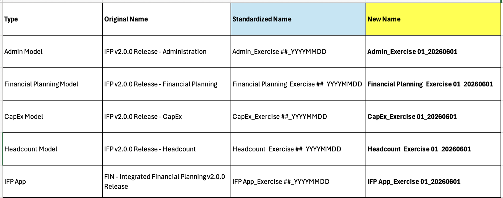

Exercise 1: OpEx and Headcount Planning
Configure your first IFP application for a manufacturing company
What you'll do
- Apply the standardized naming convention so every generated model has a unique name in your tenant
- Configure the eight standard dimensions for an OpEx + headcount scope
- Answer the top-level, Financial Planning, and Headcount configuration questions
- Internalize the six rules that keep your configuration generation-ready
The scenario
A manufacturing company needs to plan operating expenses and headcount across multiple departments and cost centers. No revenue, COGS, balance sheet, or capital expenditure are required in this configuration. You'll set up just enough to support OpEx and headcount planning — the rest of the surface area (CapEx, Revenue, Balance Sheet) comes in later exercises.
Before you start: the six rules
These rules make the difference between a configuration that generates cleanly and one that fails halfway through. Read them once now, then refer back as you work.
- Use a standardized naming convention for every model and app — duplicate names in the tenant cause generation to fail
- Renames must be no longer than the original dimension name, especially "Department"
- All standard dimensions are composite hierarchies. Flat custom lists are handled in the extension layer
- Minimum 2 levels per dimension, maximum 15
- When modifying hierarchy levels, add or remove from the middle — never from the leaf
- Click Apply Changes after every modification. If you need to start over, use Restore default
Step 1 — Apply the standardized naming convention
Before you touch any dimension, give every generated artifact a unique name following the pattern [ModelType]_Exercise ##_YYYYMMDD. This is what keeps each run unique when the same exercise is run repeatedly in the shared training tenant.
- From the Configurator landing screen, scroll to the Model & App Names section.
- For each of the four generated models (Admin, Financial Planning, CapEx, Headcount) and the IFP App, replace the default name with
[ModelType]_Exercise 1_YYYYMMDD— substitute today's date. - Click Apply Changes.

Why must every generated model and app have a unique name within the tenant?
[ModelType]_Exercise ##_YYYYMMDD keeps every run unique even when the same exercise is repeated.[ModelType]_Exercise ##_YYYYMMDD guarantees a unique name even when the same exercise is run repeatedly.Step 2 — Configure the eight standard dimensions
IFP ships with eight standard dimensions. Your job is to mark the ones this scenario needs, rename a few of them, and set the right number of hierarchy levels for each.
- In the Configurator, open the Dimensions section.
- For each row in the table below, toggle the dimension to required or not required. For the dimensions marked Yes, also set the rename and # of levels values shown.
- After each dimension change, click Apply Changes before moving to the next.
| Standard dimension | Required? | Rename to | # of levels |
|---|---|---|---|
| Entity | Yes | — | 2 |
| Department | Yes | CostCenter | 3 |
| Product | No | — | — |
| Job | Yes | Roles | 3 |
| Vendor | Yes | Suppliers | 2 |
| Functional Area | Yes | HR Org | 3 |
| Customer | No | — | — |
| Location | No | — | — |
The scenario also needs two custom lists handled in the extension layer:
| Custom list | Type | Purpose |
|---|---|---|
| Projects | Flat | Project tracking, added in the extension exercise |
| Country | Flat | Supporting attribute list |
Your client needs to track spend by project code. How do you handle "Project" in this exercise?
Step 3 — Answer the top-level configuration questions
The Configurator asks a handful of orientation questions before drilling into each model. For this scenario:
| Question | Answer | Why |
|---|---|---|
| Multi-currency support? | Yes | Multi-entity reporting needs it |
| Use the Location dimension? | No | Not required by this scenario |
| Use the Functional Area dimension? | Yes | Repurposed as "HR Org" |
- Open the Top-Level Questions section in the Configurator.
- Set each answer to the values above.
- Click Apply Changes.
Step 4 — Answer the Financial Planning questions
The Financial Planning model is the OpEx engine for this scenario. The answers below intentionally skip revenue and balance-sheet planning since the client only needs expense.
| Question | Answer |
|---|---|
| Multi-currency support? | Yes |
| Top-down targets? | No |
| Margin Planning? | Expense Only |
| Expense planning? | Yes |
| Dimensionality for expense planning | Department, Vendor |
| Dimensionality for itemized expense planning | Department |
| Expense allocations? | No |
- Open the Financial Planning section.
- Set each answer above. Pay attention to Margin Planning → Expense Only — this is what scopes the model to OpEx and skips revenue.
- Click Apply Changes.
Step 5 — Answer the Headcount questions
The Headcount model handles workforce planning. Only two questions are relevant for this scenario:
| Question | Answer |
|---|---|
| Multi-currency support? | Yes |
| Term for Job? | Roles |
- Open the Headcount section.
- Set both answers above. The term for Job here must match the rename you applied to the Job dimension in Step 2.
- Click Apply Changes.
Why did you set Margin Planning to Expense Only in this exercise?
Expense Only is right when the client only needs OpEx — it strips out the revenue and balance-sheet pieces so generation only builds what you'll actually use. Exercise 2 will widen the scope.Expense Only matches a client who needs OpEx but not revenue, COGS, or balance-sheet planning. There's no universal default; the scenario dictates the answer.You're done with the configuration
You've now set up a complete OpEx + headcount configuration. You haven't generated the model yet — that comes in Model Generation. For now, leave the Configurator alone and head to Exercise 2, which widens the scenario to include revenue and CapEx.
- A future Application Framework update will make configuration question terminology adapt to any dimension renames you've made.
- An additional update will allow a 1-click "Restore defaults" for all settings.